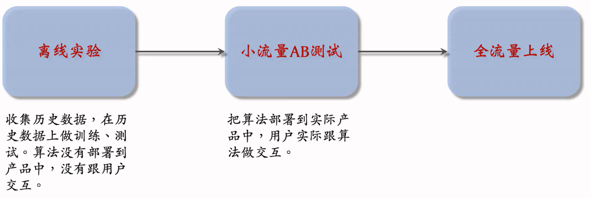

本期内容
- 推荐系统概述
- 推荐系统评价体系
- 推荐系统的基本构成
- A/B 测试
推荐系统概述
推荐系统是一种自动化的工具，它的核心任务是在信息过载的环境中联系用户和物品。在信息匮乏的时代，用户很容易自己找到想要的东西，但互联网时代下，商品、视频、新闻的数量爆炸式增长，用户陷入了"选择困难"。推荐系统正是在这个背景下诞生的：它不需要用户提供明确的需求关键词，而是通过分析用户的历史行为来建模用户的兴趣，从而主动给用户推荐他们可能感兴趣的内容，帮助用户从海量信息中发现有价值的东西。
推荐系统评价体系
常见指标
好的推荐系统不仅要准确命中用户已有的兴趣，还要能帮助用户发掘新的兴趣，避免用户陷入"信息茧房"。因此，评价推荐系统不能只看单一维度，常见的评价指标包括：
-
准确性：推荐结果与用户实际偏好的匹配程度，常用指标如：
\[ \text{Precision} = \frac{\text{推荐且用户喜欢的物品数}}{\text{推荐的总物品数}} \]
\[ \text{Recall} = \frac{\text{推荐且用户喜欢的物品数}}{\text{用户实际喜欢的物品总数}} \] -
覆盖率：推荐系统能够覆盖到的物品占全部物品的比例，反映系统发掘长尾的能力：
\[ \text{Coverage} = \frac{|\text{被推荐的物品集合}|}{|\text{全部物品集合}|} \] -
多样性：推荐列表中物品之间的相似度越低，多样性越高，避免推荐结果过于同质化。
-
新颖性与惊喜度：新颖性指推荐用户未曾接触过的物品，惊喜度则更进一步——推荐用户没想到但确实会喜欢的内容。
北极星指标
指标过多会导致团队目标分散，不同部门各自优化自己的指标，反而难以形成合力。因此，不同行业通常会根据自身业务特点选择一个北极星指标作为最高指导原则：
- 短视频平台：总用户使用时长（广告收入依赖时长）
- 电商平台：GMV（成交总额，直接对应营收）
- 内容社区：活跃创作者数量或内容互动量（维持供需平衡）
- 音乐流媒体：收听时长或付费转化率（取决于增长阶段）
北极星指标具有唯一性、可量化、长期导向的特点，确保整个团队朝同一个方向努力。
评价流程
在实际工业环境中，推荐系统的效果评估通常遵循离线测试 → 小规模在线A/B测试 → 全量上线的渐进流程：
-
离线测试：利用历史数据集模拟推荐效果，计算各项指标。优点是速度快、成本低，缺点是离线环境与真实用户行为存在偏差。
-
小规模A/B测试：将一小部分真实用户流量分为实验组（新算法）和对照组（旧算法），对比两组用户的北极星指标及相关辅助指标。这一步能暴露离线测试无法发现的线上问题。
-
逐步扩量：如果小规模测试结果正向且显著，逐步扩大实验流量比例，同时持续监控指标变化和潜在风险，最终决定是否全量上线。
